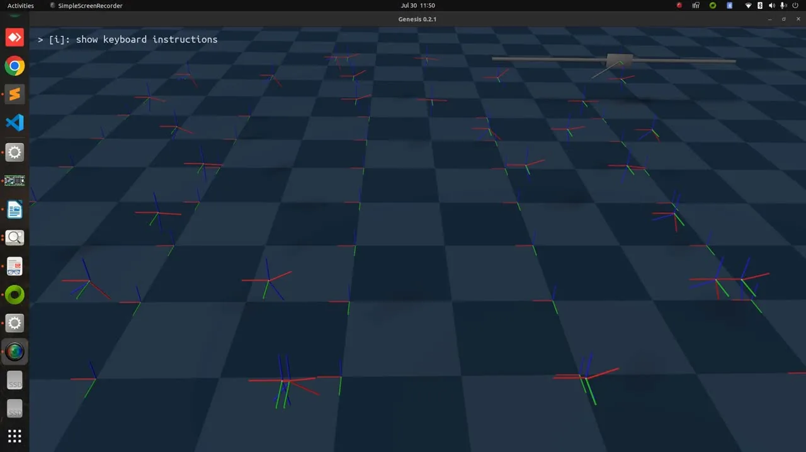
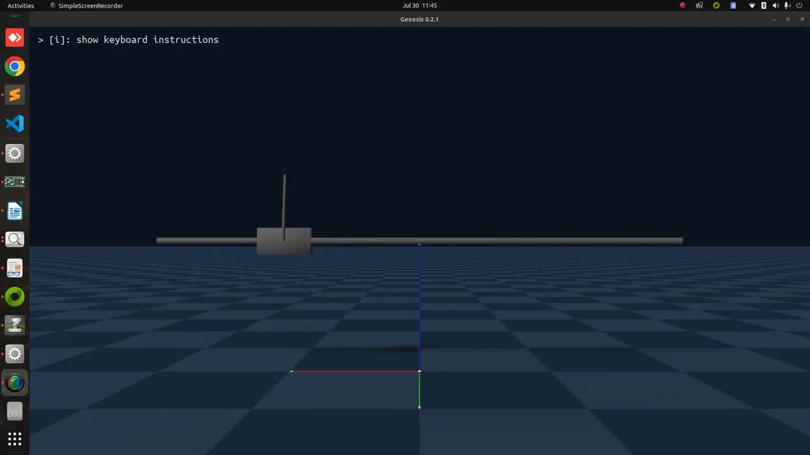
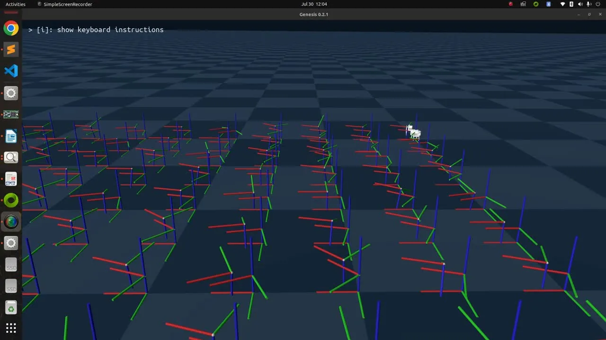
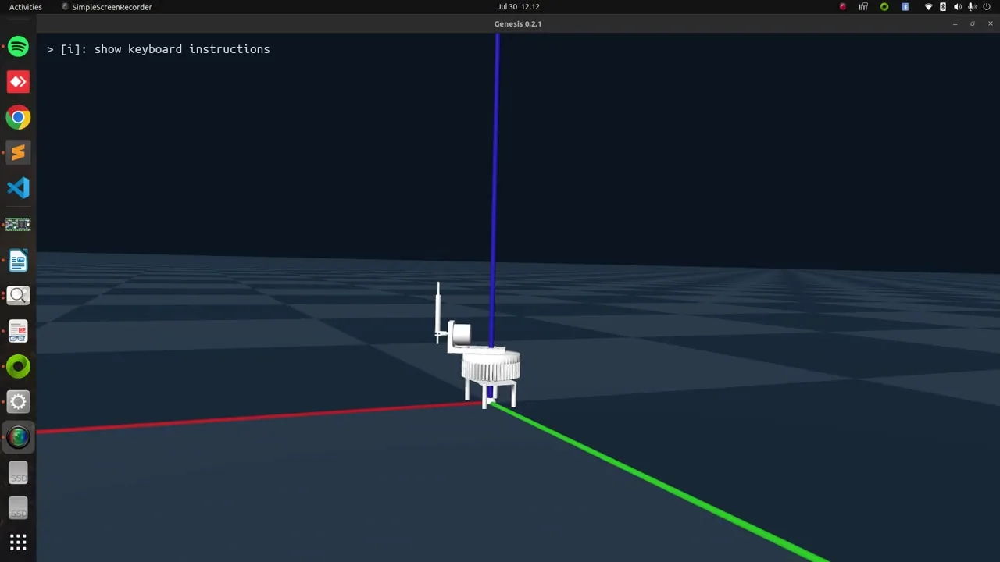
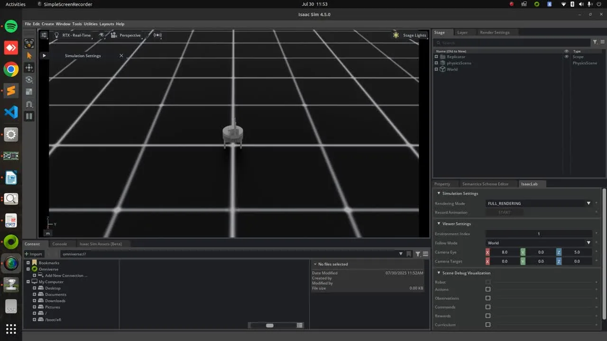

Genesis Sim · typical cartpole
The classic balancing task as a baseline.
01
Training
parallel envs
02
Evaluation
single rollout
Genesis Sim · custom cartpole
A custom cartpole model in the same training loop.
01
Training
parallel envs
02
Evaluation
single rollout
Isaac Sim · RL
The same workflow in NVIDIA Isaac Sim.
01
Training
parallel envs02
Evaluation
single rollout